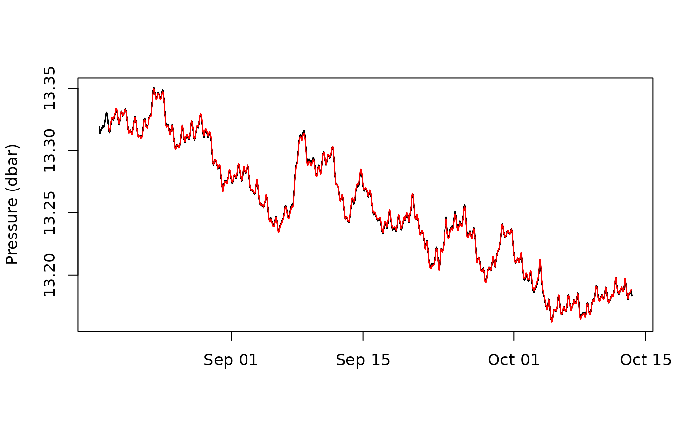

Regression
regression.Rmd
library(hydrorecipes)
#> Loading required package: BesselExample usage:
#|warning: false
#|message: false
library(hydrorecipes)
# kennel_2020 (1 minute interval)
# water level
# barometric pressure
# synthetic earthtide
data(kennel_2020)
form <- as.formula(wl~.)
ba_knots <- log_lags_arma(15, 1441) # knots for distributed lag baro terms
df <- 5 # degrees of freedom for spline background trend
rec <- recipe(form, kennel_2020) |>
step_distributed_lag(baro, knots = ba_knots) |>
step_spline_b(datetime, df = df) |>
step_lead_lag(et, lag = seq(-120, 120, 60)) |>
step_intercept() |>
step_drop_columns(c(baro, et, datetime)) |>
step_ols(formula = form) |>
prep() |>
bake()
# responses
resp <- rec$get_response_data(type = "dt")
# barometric response function
plot(value~x, data = resp[term == "distributed_lag_interpolated" & variable == "cumulative"],
type = "l",
xlab = "Lag time in minutes",
ylab = "Cumulative response")
# decomposition
pred <- cbind(kennel_2020, rec$get_predict_data())
# initial
plot(wl~datetime, pred, type = "l",
xlab = "", ylab = "Pressure (dbar)")
# predicted sum of components
points(wl_step_distributed_lag_baro +
wl_step_spline_b_datetime +
wl_step_lead_lag_et +
wl_step_intercept~datetime, pred, type = "l", col = "red")